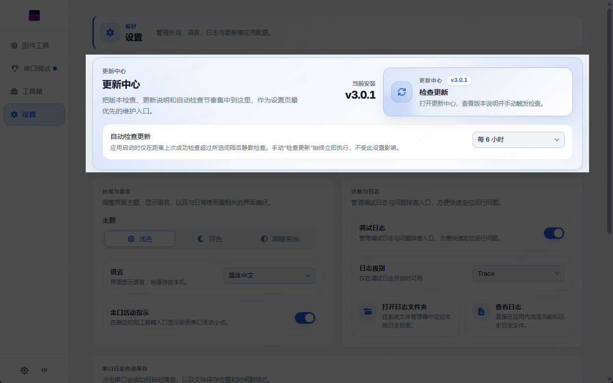
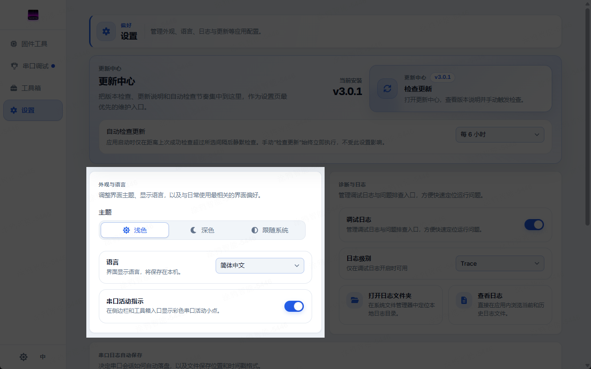
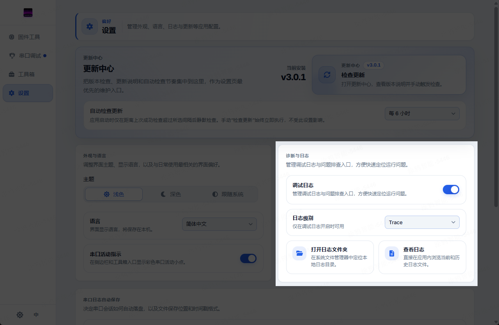

设置
本页是设置页的完整参考：把所有可配置项集中在一处，覆盖更新中心、外观与语言、诊断与日志、串口日志、关于，以及设置本身的持久化方式。
1. 更新中心
更新中心是设置页顶部最显眼的入口，集中管理版本检查与后台更新节奏：
- 当前版本（Installed build）：显示已安装构建的版本号与徽标，让你一眼判断当前处于哪个版本。
- 检查更新（Check for updates）：仅桌面端（Tauri）可用。点击后会打开更新对话框（UpdateDialog），立即检查是否有新版本并查看发布说明——这是手动触发，不受下方间隔限制，始终立即执行。
- 自动检查间隔（Automatic update checks）：控制启动时是否静默检查。仅在距离上次成功检查的时间超过所选间隔时才触发，避免每次打开都打扰你。可选值：
Off（关闭，仅手动检查）1h（每 1 小时）6h（每 6 小时）12h（每 12 小时）24h（每 24 小时）

Web 端无自动更新
自动更新依赖 Tauri 的
updater 插件，仅在桌面应用里可用；Web 版不会出现“检查更新”按钮，自动检查间隔也不会生效。
2. 外观与语言
外观区集中了最常调整的界面偏好：
- 主题（Theme）：三档分段选择 ——
Light（浅色）/Dark（深色）/System（跟随系统）。- 主题会立即应用到 DOM，无需重启。
- 选择
System时，主题会跟随系统配色方案：系统在浅色 / 深色之间切换时，应用会实时跟随。
- 语言（Language）：UI 语言，三选 ——
Auto（自动）/简体中文/English。Auto会根据浏览器 / 系统语言解析：以zh开头的用中文，否则用英文。- 语言按设备保存，切换后立即生效。
- 串口指示器（Serial port indicators）：开关侧边栏与工具箱条目里的彩色串口活动小圆点，用于一眼看出某个端口是否在收发数据。

高级 UART 设置不在这里
波特率等高级 UART 参数放在串口调试页的设置弹窗里，而非设置页；详见串口调试 · 连接与串口配置。
3. 诊断与日志
诊断区把调试日志与排障工具集中在一起：
- 调试日志开关（Debug Log）：总开关。关闭后 Rust 后端的日志级别会被设为
off。 - 日志级别（Log Level）：仅在调试日志打开时可用。级别会通过
set_log_level命令应用到 Rust 后端的log::set_max_level。可选值：Error（错误）Warn（警告）Info（信息）Debug（调试）Trace（跟踪，最详细）
- 打开日志文件夹（Open log folder）：在系统文件管理器里定位本地日志目录。
- 查看日志（View logs）：打开应用内日志查看器（LogViewerDialog），无需离开应用即可浏览、搜索日志。
- 导出日志并报告问题（Export Logs & Report Issue）：位于日志查看器内。会把日志打包成 zip，并打开一个预填好版本号和操作系统字段的 GitHub issue 表单（仅桌面端）。

日志文件如何落地
桌面端的日志由 tauri-plugin-log 写入日志目录，行为与命令行一致（见命令行）：
- 按会话命名：每次启动写一个独立文件，文件名为
tyutool-<时间戳>.log。 - 10 MB 滚动：单个会话日志达到 10 MB 后滚动到
tyutool-<时间戳>-1.log、-2.log…… 以此类推。 - 启动时清理：旧会话文件在启动时被修剪，避免无限堆积。
- 日志目录按平台：
- Linux：
~/.local/share/tyutool/ - macOS：
~/Library/Application Support/tyutool/ - Windows：
%APPDATA%\tyutool\
- Linux：
级别对后端生效
日志级别作用在 Rust 后端（通过
log::set_max_level），因此它影响的是被写入日志文件的那些日志，而不是前端界面的显示。
4. 串口日志
串口日志区其实是串口调试 · 自动保存的镜像入口，让你不必切到串口调试页就能配置会话归档：
- 自动保存开关（Auto-save）：开启后串口调试会把整段会话流式写入磁盘。首次开启且尚未选择目录时，会自动弹出目录选择器。
- 保存目录（Save directory）：目录选择器，显示当前所选目录（未选时为
—）。 - 时间戳格式（Timestamp format）：开关是否在自动保存的文件名里加上时间戳，便于区分不同会话。
配置同步
这里的设置与串口调试页的自动保存是同一份（来自同一个 store），在任一处修改都会即时反映到另一处。
5. 关于
关于区是较轻量的页脚式信息块：
- 应用版本：显示当前 tyutool 版本（与更新中心的“当前版本”一致）。
- 开源许可（Open-source licenses）：打开项目的 LICENSE 页面。
6. 持久化
设置按以下方式持久化，下次启动时自动恢复：
- 桌面端（Tauri）：写入
settings.json（由tauri-plugin-store管理）。启动时会异步从该文件加载，加载完成后再次把主题应用到 DOM。 - Web 端：写入浏览器
localStorage。 - 主题：无论哪种运行时，主题都会应用到 DOM；在
System模式下还会监听系统的配色方案变化并实时跟随。
键名一致
桌面端
settings.json 里的键名与 Web 端 localStorage 的键名一一对应（如主题、语言、日志开关等），便于排查与迁移。